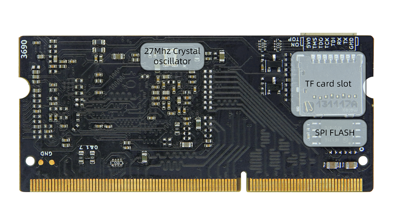
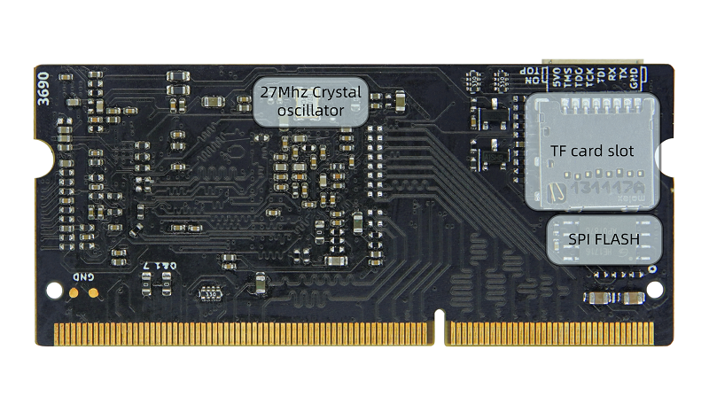
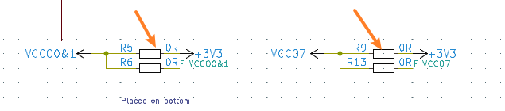
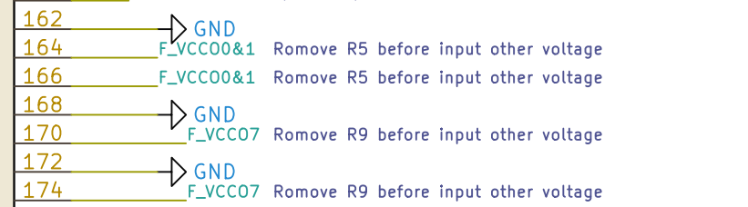
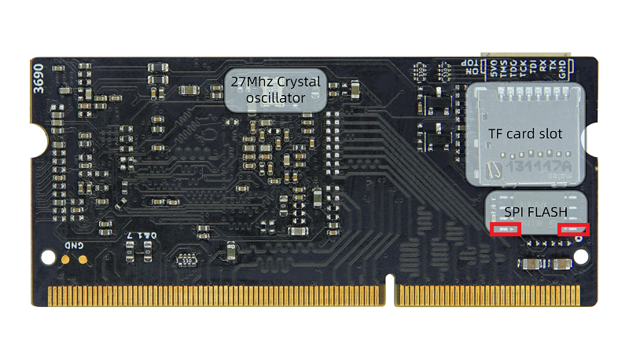

Tang Primer 20K
编辑于 2022.08.22
概述
Tang Primer 20K 是基于 GW2A-V18PG256C8IC8I7 所设计的一款 DDR3 sodimm 封装的核心板，额外准备了两个底板，分别为 Dock 底板和 Lite 底板。
核心板
外设框图
 

相关参数
| 项目 | 参数 | 补充 | ||||||||||||||||
|---|---|---|---|---|---|---|---|---|---|---|---|---|---|---|---|---|---|---|
| 主控 | GW2A-LV18PG256C8IC8I7 |
|
||||||||||||||||
| 内存 | 128M DDR3 | 128Meg x 16 | ||||||||||||||||
| Flash | 32Mbits NOR Flash | 下载方式参考底部相关问题 | ||||||||||||||||
| 调试接口 | Jtag + Uart | JST SH1.0 8Pins 连接器 | ||||||||||||||||
| SD 卡槽 | 一个 | 推拉式 | ||||||||||||||||
| 显示接口 | 8Pins spi lcd 连接器 | |||||||||||||||||
| 整体封装 | 204P DDR3 Sodimm 金手指 | |||||||||||||||||
| 可用 IO | 一共 117 个 |
底板对比
Dock 底板产品图
Lite 底板产品图
底板左上角 R8 与 P9 之间为 P8 引脚。已标明
外设参数对比
| 项目 | Dock | Lite | |||
|---|---|---|---|---|---|
| 数量 | 补充说明 | 数量 | 补充说明 | ||
| RGB 接口 | 1 | RGB565 40P FPC 连接器 | |||
| DVP 接口 | 1 | 24P FPC 连接器 | |||
| 麦克风阵列接口 | 1 | 10P FPC 连接器 | |||
| 触摸接口 | 1 | 4P FPC 连接器 | |||
| PMOD 接口 | 4 | 4 | |||
| 3.5mm 耳机接口 | 1 | 使用 LPA4809MSF 驱动 | |||
| 拨码开关 | 1 | 5P 拨码开关 | |||
| 滑动开关 | 1 | 切换板载 USB 功能 | 2 | 用户自定义功能 | |
| Type-C 接口 | USB-JTAG&UART | 1 | 板载 BL702 芯片用来 下载比特流并提供串口功能 |
||
| 自定义 USB | 1 | USB3317 芯片与滑动开关 来自定义该 USB 接口功能 |
|||
| 无线天线 | 1 | 使用 BL702 芯片的无线功能 | |||
| 按键 | 6 | 一个用来烧录 BL702, 剩下五个用户自定义功能 |
2 | ||
| LED | 6 | ||||
| HDMI 接口 | 1 | ||||
| 以太网接口 | 1 | TL8201F 芯片实现以太网功能 | |||
| RGB LED | 1 | WS2812 灯珠 | |||
硬件资料汇总
规格书、原理图、尺寸图等均可在这里找到：点击这里
上手指引
安装 IDE ：点击这里
阅读 这个 完成点灯操作。
进行完上面的点灯操作后可以考虑将一个灯闪改为多个灯一起闪，来提升自己
如果进行完上面的点灯操作后后感觉有压力，可以自己查漏补缺：
可以在下面的这些网站学习 Verilog:对 IDE 使用有疑问的话，可以查看官方的一些文档来熟悉相关内容
- SUG100-2.6_Gowin云源软件用户指南.pdf
- SUG949-1.1_Gowin_HDL编码风格用户指南.pdf
- UG286-1.9.1_Gowin时钟资源(Clock)用户指南.pdf
- SUG940-1.3_Gowin设计时序约束用户指南.pdf
- SUG502-1.3_Gowin_Programmer用户指南.pdf
- SUG114-2.5_Gowin在线逻辑分析仪用户指南.pdf
上面的所有文档都已经打包进了下载站点我跳转，需要的话可以点击压缩包全都下载下来。
例程汇总
https://github.com/sipeed/TangPrimer-20K-example
部分教程：
- LED drive ：点我跳转
交流方式
- 交流论坛: bbs.sipeed.com
- QQ 交流群：834585530
- 直接本页下方留言
补充说明
对于板子上的 bank 0、bank 1、bank 7 这 3 个 bank 电压，默认所接的是 3.3V，对应的 bank IO 会对外输出 3.3V 电压。如果需要输入自定义的 IO bank 电压，请拆除 R5 和 R9，请参考对应 Assembly 点我跳转 图来确定 R5 和 R9 的位置。

对应核心板原理图上在金手指处的说明如下

相关问题
如何下载到外部 FLASH
进行如下选项设置：

烧录后没反应或者引脚现象不对
首先确定选择了正确的型号，下图中的每一个参数都要求一致

然后检查自己的代码和对应的仿真波形是否满足要求
之前成功烧录过一次外部 Flash 后 Programmer 软件无法再烧录
注意描述是之前成功烧录过一次 Flash。
这种情况默认为启用了错误的引脚复用而导致下载器不能再识别到 FPGA 的 JTAG。解决办法是在芯片通电前将核心板上的 Flash 使能引脚拉高来阻止 FPGA 加载固件。使用金属将板子上的 Flash 短接后再通电即可解决。短接的具体位置见下图 Flash 处两侧的红框处。
